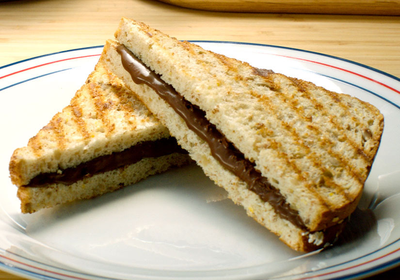

Bocadillo de Nocilla
Preparacion del bocadillo de Nocilla

Primer paso
ngredientes
Pan
Nocilla
Segundo paso
Vierte la Nocilla en una cara del pan.
Hecha las frambuesas y cierra con la otra rebanada de pan.
Plancha el sándwich en una sandwichera bien caliente 1 minuto.
para seber mas sobre el bocadillo de nocilla
Previous
1
2
3
Next